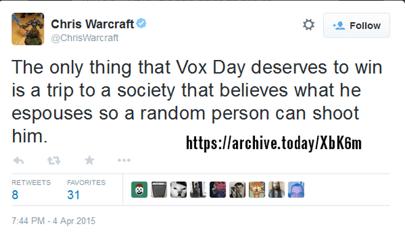

< < < Back
Backlash Against The Boycott Of Sci-Fi Publisher Tor Books Shows The Hypocrisy Of SJWs – Return Of Kings
For the past few days, social justice warriors have been browning their panties over a boycott of science fiction publisher Tor Books launched by independent sci-fi author Peter Grant and supported by several prominent Sad and Rabid Puppies figures, including Castalia House founder Vox Day. The impetus for Grant’s boycott was a series of angry, lie-filled claims that Tor editor Irene Gallo made about Sad and Rabid Puppies, as well as Tor owner Tom Doherty’s failure to take action against her:
There are two extreme right-wing to neo-nazi groups, called the Sad Puppies and Rabid Puppies respectively, that are calling for the end of social justice in science fiction and fantasy. They are unrepentantly racist, misogynist, and homophobic. A noisy few but they’ve been able to gather some Gamergate folks around them and elect a slate of bad-to-reprehensible works on this year’s Hugo ballot.
SJWs insulting the people they expect to buy their products is nothing new, but this time, their targets have decided that they aren’t going to take it anymore:
Finally, there are some who fear that we can’t succeed in the face of what they consider overwhelming support for liberal/progressive/left-wing ideologies in our society. To them I can only say, never take counsel of your fears. Stand tall. Turn Alinsky’s own tactics against his followers. Boycotts are a part of his script. Use them. You’ll be surprised at what hard work and dedication can achieve. I’ve seen that in a country and a continent ripped apart by war (where I learned such tactics by watching the disciples of those who taught Alinsky and his mentors in the first place). It’s a whole lot easier to succeed in a society like ours.
Since Grant launched his boycott of Tor on Friday, it’s picked up steam among Sad and Rabid Puppies supporters and drawn the opprobrium of SJWs, who’ve launched a “buy-cott” in response (complete with fake Twitter accounts in support). Vox Day has been one of the most vocal supporters of the boycott, pointing to libelous comments made by another Tor editor, Patrick Nielsen Hayden, and how both his and Gallo’s remarks violate Macmillan’s (Tor’s corporate parent) code of conduct.
SJWs’ panicked response to the Tor boycott is yet more evidence of how hypocritical and lacking in honesty they are. Leftists are happy to launch boycotts against companies whenever their employees make “racist,” “misogynist” or “homophobic” comments: indeed, instigating witch hunts against those they deem “bigots” is practically a sport among the left. But when one of their own is targeted, these fearless moral crusaders suddenly cry foul.
More importantly, the frenzied fear that SJWs have of the Sad and Rabid Puppies is indicative that Tor Books—and mainstream publishing in general—are in trouble. For the past few years, self-publishing and independent presses such as Castalia House, Nine-Banded Books and Counter-Currents Publishing have been eating away at major publishers, who no longer enjoy the privilege of determining what books see the light of day. If this boycott is successful, it may spell the death knell for not just Tor Books, but for traditional publishing in general.
A Brief History Of SJW Entryism

In the past couple of decades, publishing in general—and sci-fi and fantasy publishing especially—has become increasingly dominated by leftists, who have jettisoned the genres’ focus on adventure and exploration in favor of heavy-handed social justice narratives blaming cishetwhitemales for all the world’s ills.
Any writer who dissented from the SJW line was effectively blacklisted from Tor and other major publishing houses, as well as denied nominations in the industry’s prestigious Hugo and Nebula Awards.
As you would expect, sales of newer sci-fi and fantasy books have flatlined as SJWs such as Nielsen Hayden and N.K. Jemisin have become dominant voices. As it turns out, nobody wants to read “socially aware” dreck like If You Were a Dinosaur, My Love and other works that cast straight white men as the devil incarnate.
Sales figures show this: of the top ten best-selling sci-fi books in 2012, all but two of them were either Star Wars/Halo tie-ins or published decades ago. The number one best-selling book was Orson Scott Card’s Ender’s Game, published in 1985.
Last April, SJWs threw conniption fits when the Sad and Rabid Puppies, two campaigns spearheaded by sci-fi authors Larry Correia and Vox Day, respectively, successfully nominated several non-SJW works for this year’s Hugo Awards. Beyond showing how petty SJWs are, the Sad and Rabid Puppies’ campaign showed that SJWs are a vocal-but-tiny minority, since it only took a handful of votes to swing the nomination results.
The inability of SJW science fiction to turn a profit is likely the primary motivator behind both the anger at the Sad and Rabid Puppies and the panicked response to the Tor boycott. At present, the closest thing Tor has to a big star is John Scalzi, a middling blogger whose most notable novel is glorified Star Trek fan fiction.
Scalzi recently inked a multi-million dollar deal with Tor, a questionable move for them considering that Redshirts—as well as Scalzi’s other books—have never cracked the top ten in sci-fi sales for any year.
The SJW Cries Out In Pain As He Strikes You
SJWs’ slavish defense of Tor Books is also more evidence that, contrary to their belief that they’re fighting for oppressed minorities, they are in fact tools of corporate power.
The authors represented by Sad and Rabid Puppies were denied a voice by the SJW-dominated publishing industry, but they’ve chosen to persevere anyway. They’ve chosen to either take their chances with self-publishing—which gives you maximum freedom, but also requires you to market your own work—or band together to create independent publishing houses such as Castalia House. They are, by anyone’s definition, the underdogs in this war.
In contrast, Tor Books is a mainstream house owned by a major publisher, Macmillan. They are precisely the faceless, uncaring, capitalist behemoth that SJWs purport to oppose, yet SJWs feverishly defend them. They also have conjured up fantasies of the Sad and Rabid Puppies “silencing” them (as Irene Gallo’s comments show), when in fact they are simply fighting for a place for non-SJW sci-fi. No matter how powerful they become, SJWs live in perpetual fear that evil right-wing “shitlords” are coming to oppress them.
While I can’t join in the boycott of Tor Books (since I’ve never owned any of their books and wasn’t planning to buy any anyway), I wholeheartedly support Peter Grant and Vox Day’s campaign against them. With luck, we will see the destruction of traditional publishing and a renaissance in not just science fiction, but in American literature in general.
Read More: The Josh Duggar Incident Reveals The Tactics And Hypocrisy Of SJWs